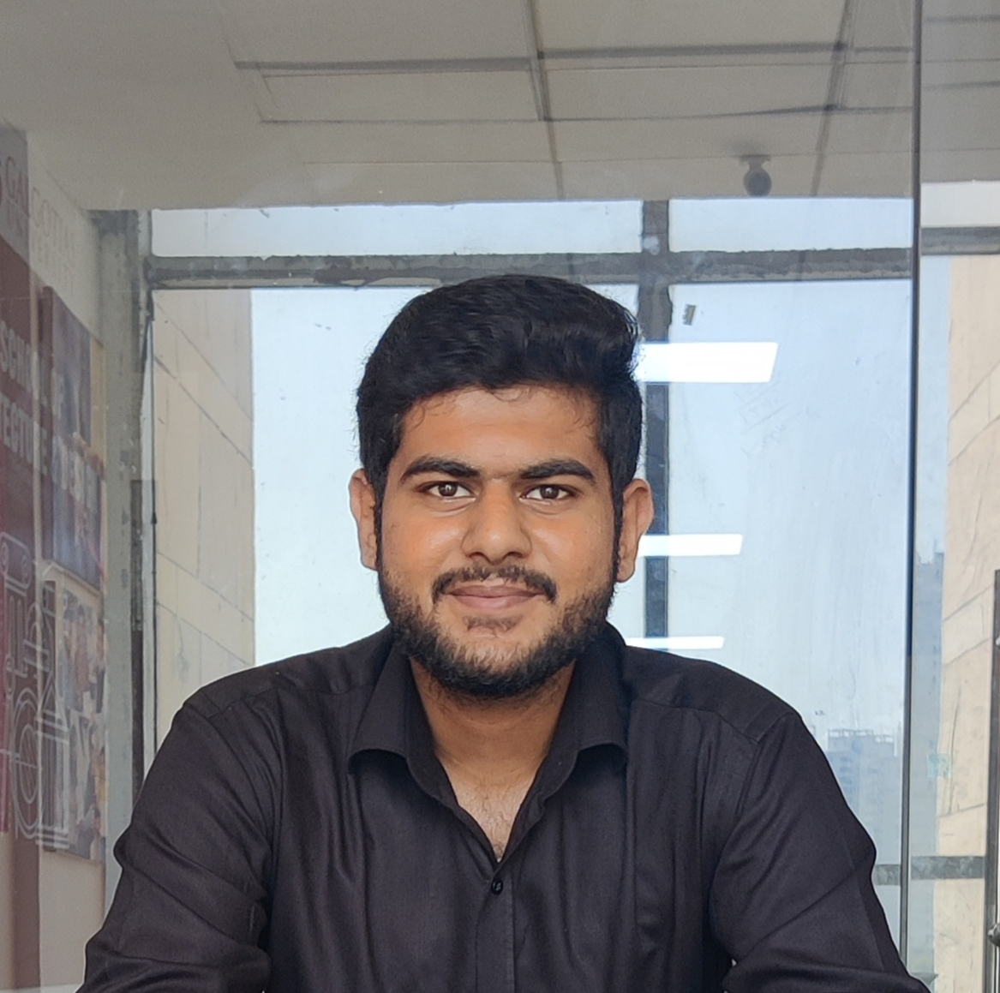

Rishabh Thakur

Summary
My name is Rishabh Thakur, I'm a web developer with a solid foundation in HTML, CSS, SQL, and API's, complemented by
proficiency in Java, and JavaScript. With a collaborative mindset and strong interpersonal skills, I excels in working across teams to
develop robust products. My adeptness in Git and a keen eye for detail enhance my ability to tackle challenges head-on and deliver
results. Known for clear communication and effective presentation of complex ideas, I'm highly driven, inventive, and results
oriented, making me a valuable asset to any project or team
Education
- Rainbow School, Saharanpur
10th | CBSE | Percentage: 76.20 / 100 (2018-2019)
- Rainbow School, Saharanpur
12th | CBSE | Percentage: 81.60 / 100 (2020-2021)
- Galgotias University
B.Tech. - Computer Science & Engineering | Percentage: 74.20 / 100 (2021-2025)
Projects
- SILENT EXPRESSIONS: AI - Powered sign language to multi language interpreter
- Iris recognition using ML and its applications in smart healthcare system
- Text Summarization
Skills
- Java
- HTML5
- CSS
- Java Script
- Data Structures
- SQL
- JSON
- JQuery
- Git
- API
EXTRA CURRICULAR ACTIVITIES
- Participated in Dextrix 3.O Hackathon at GU
- Presented a project at National Level based on
generating employment and electricity by using pine
leaves.
- First position in Intercollege cricket competition.
My Hobbies
Contact Information